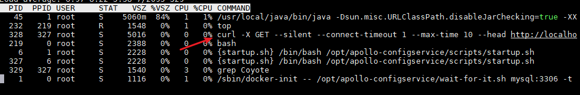

容器系列（五）：配置中心Apollo容器中Exit 1
文章目录
1. 问题描述
在容器中运行 Apollo 相关的3个程序时，在运行一段时间后程序自动退出。通过 docker ps -a 查看到容器退出状态码为 1 。
2. 问题排查
本次因为是在一台宿主机上运行了19个容器，所以最初怀疑是内存原因，容器进程因 OOM 被系统给 Kill 掉了。
2.1 通过docker event查看事件
通过 docker event 命令查看这段时间内的事件信息
|
|
输出结果如下
1 2 3 4 5 6 7 |
[root@localhost build]# docker events --since $t0 --until $t1 2019-09-22T02:08:03.772408118-07:00 container die a54711efd65de9aeb34a93813a2b7536849301733118a0730cbc57479d374304 (com.docker.compose.config-hash=ccf1e706778f960e6038a6e4b10e74e815d652f9ce957c2b56d1cfa4dadf982d, com.docker.compose.container-number=1, com.docker.compose.oneoff=False, com.docker.compose.project=build, com.docker.compose.service=apollo-configservice, com.docker.compose.version=1.24.1, exitCode=1, image=apollo-configservice:latest, maintainer=zxb@dameng.com, name=build_apollo-configservice_1) 2019-09-22T02:08:03.855373609-07:00 network disconnect d3a2cd8c37ea28abbad6d57992927e67c5f4474cdabedaeb986bf907756b701c (container=a54711efd65de9aeb34a93813a2b7536849301733118a0730cbc57479d374304, name=build_default, type=bridge) 2019-09-22T02:08:51.944998037-07:00 container die 673c3080ee7a772fa5b27fe76801cd0829d2a4daebeea16eb1db9610d17893fa (com.docker.compose.config-hash=06ebc8e4f6b8ceae485ce7d61e4f843cb33eabfabe3d2c46145246a44258f5f9, com.docker.compose.container-number=1, com.docker.compose.oneoff=False, com.docker.compose.project=build, com.docker.compose.service=apollo-portal, com.docker.compose.version=1.24.1, exitCode=1, image=apollo-portal:latest, maintainer=zxb@dameng.com, name=build_apollo-portal_1) 2019-09-22T02:08:52.043329440-07:00 network disconnect d3a2cd8c37ea28abbad6d57992927e67c5f4474cdabedaeb986bf907756b701c (container=673c3080ee7a772fa5b27fe76801cd0829d2a4daebeea16eb1db9610d17893fa, name=build_default, type=bridge) 2019-09-22T02:08:52.358787327-07:00 container die cf7ec2f076db2e242032764ccb3ee0f9cd6e0d358b6bd2e1fbd04c5c79f849f3 (com.docker.compose.config-hash=23f1c8cb2bd756202a97c4f9917c08fb0ad43e30bcbe4b9b4cc1fbd4ee655be6, com.docker.compose.container-number=1, com.docker.compose.oneoff=False, com.docker.compose.project=build, com.docker.compose.service=apollo-adminservice, com.docker.compose.version=1.24.1, exitCode=1, image=apollo-adminservice:latest, maintainer=zxb@dameng.com, name=build_apollo-adminservice_1) 2019-09-22T02:08:52.442668740-07:00 network disconnect d3a2cd8c37ea28abbad6d57992927e67c5f4474cdabedaeb986bf907756b701c (container=cf7ec2f076db2e242032764ccb3ee0f9cd6e0d358b6bd2e1fbd04c5c79f849f3, name=build_default, type=bridge) |
事件日志中只提到了退出状态为 1 ，没有其它有用的信息。
2.2 监控系统日志
另开一个 shell 窗口输出系统日志信息
1
|
tail -f /var/log/* |
当 apollo 3个容器退出时，系统输出日志内容如下：
1 2 3 4 5 6 7 8 9 10 11 12 13 14 15 16 17 18 19 20 21 22 23 24 |
==> /var/log/messages <== Sep 22 02:08:03 localhost containerd: time="2019-09-22T02:08:03.761967227-07:00" level=info msg="shim reaped" id=a54711efd65de9aeb34a93813a2b7536849301733118a0730cbc57479d374304 Sep 22 02:08:03 localhost dockerd: time="2019-09-22T02:08:03.772246942-07:00" level=info msg="ignoring event" module=libcontainerd namespace=moby topic=/tasks/delete type="*events.TaskDelete" Sep 22 02:08:03 localhost kernel: br-d3a2cd8c37ea: port 2(veth48561d1) entered disabled state Sep 22 02:08:03 localhost NetworkManager[778]: <info> [1569143283.8185] manager: (veth8ff332e): new Veth device (/org/freedesktop/NetworkManager/Devices/13) Sep 22 02:08:03 localhost kernel: br-d3a2cd8c37ea: port 2(veth48561d1) entered disabled state Sep 22 02:08:03 localhost kernel: device veth48561d1 left promiscuous mode Sep 22 02:08:03 localhost kernel: br-d3a2cd8c37ea: port 2(veth48561d1) entered disabled state Sep 22 02:08:03 localhost NetworkManager[778]: <info> [1569143283.8371] device (veth48561d1): released from master device br-d3a2cd8c37ea Sep 22 02:08:51 localhost containerd: time="2019-09-22T02:08:51.934787792-07:00" level=info msg="shim reaped" id=673c3080ee7a772fa5b27fe76801cd0829d2a4daebeea16eb1db9610d17893fa Sep 22 02:08:51 localhost dockerd: time="2019-09-22T02:08:51.945035345-07:00" level=info msg="ignoring event" module=libcontainerd namespace=moby topic=/tasks/delete type="*events.TaskDelete" Sep 22 02:08:51 localhost NetworkManager[778]: <info> [1569143331.9902] manager: (veth47cfd10): new Veth device (/org/freedesktop/NetworkManager/Devices/14) Sep 22 02:08:51 localhost kernel: br-d3a2cd8c37ea: port 4(veth452499b) entered disabled state Sep 22 02:08:52 localhost kernel: device veth452499b left promiscuous mode Sep 22 02:08:52 localhost kernel: br-d3a2cd8c37ea: port 4(veth452499b) entered disabled state Sep 22 02:08:52 localhost NetworkManager[778]: <info> [1569143332.0177] device (veth452499b): released from master device br-d3a2cd8c37ea Sep 22 02:08:52 localhost containerd: time="2019-09-22T02:08:52.348968105-07:00" level=info msg="shim reaped" id=cf7ec2f076db2e242032764ccb3ee0f9cd6e0d358b6bd2e1fbd04c5c79f849f3 Sep 22 02:08:52 localhost dockerd: time="2019-09-22T02:08:52.358812192-07:00" level=info msg="ignoring event" module=libcontainerd namespace=moby topic=/tasks/delete type="*events.TaskDelete" Sep 22 02:08:52 localhost kernel: br-d3a2cd8c37ea: port 3(vethbfa3795) entered disabled state Sep 22 02:08:52 localhost NetworkManager[778]: <info> [1569143332.4038] manager: (veth50a3fa2): new Veth device (/org/freedesktop/NetworkManager/Devices/15) Sep 22 02:08:52 localhost kernel: br-d3a2cd8c37ea: port 3(vethbfa3795) entered disabled state Sep 22 02:08:52 localhost kernel: device vethbfa3795 left promiscuous mode Sep 22 02:08:52 localhost kernel: br-d3a2cd8c37ea: port 3(vethbfa3795) entered disabled state Sep 22 02:08:52 localhost NetworkManager[778]: <info> [1569143332.4180] device (vethbfa3795): released from master device br-d3a2cd8c37ea |
从上面这段日志，只是大致能看出容器退出的一些操作，没有发现其它有用的信息。
2.3 编写脚本查看评分最高进程
参考官方文档 在 Linux 系统中， 当系统内存不足时，会抛出 OOM 异常，并开始杀死一些进程用于释放内存空间。所有的进程都可能会被杀死，当然也包括 docker daemon 和其它一些应用进程。如果 docker daemon 也被杀掉了，就意味着宿主机上所有的容器都不能工作了。
Docker 通过调整自身 docker daemon 进程的 OOM 优先级来缓解这个问题，但是，容器进程的优先级是没有被调整的。系统在杀死进程时会先给进程打分，评分最高的进程会优先被杀死。
下面这个脚本用于输出评分最高的40个进程
|
|
该脚本运行后，排在前3名的也确实是 apollo 的3个进程。
但是上面通过查看系统日志或者 dmesg 均未找到 OOM 相关字样。
2.4 docker inspect查看退出容器的状态
docker inspect 容器ID 可以查看容器退出状态，如下所示：
1 2 3 4 5 6 7 8 9 10 11 12 13 |
"State": {
"Status": "exited",
"Running": false,
"Paused": false,
"Restarting": false,
"OOMKilled": false,
"Dead": false,
"Pid": 0,
"ExitCode": 1,
"Error": "",
"StartedAt": "2019-09-22T08:55:56.163083467Z",
"FinishedAt": "2019-09-22T09:08:03.511086263Z"
} |
状态中的 OOMKilled 这项显示为 false ，说明容器应该并非因 OOM 然后被杀死的。
2.5 查看Docker服务日志
|
|
1 2 3 4 |
Sep 22 01:50:13 localhost.localdomain systemd[1]: Started Docker Application Container Engine. Sep 22 02:08:03 localhost.localdomain dockerd[1876]: time="2019-09-22T02:08:03.772246942-07:00" level=info msg="ignoring event" module=libcontainerd namespace=moby topic=/tasks/delete type="*events.TaskDelete" Sep 22 02:08:51 localhost.localdomain dockerd[1876]: time="2019-09-22T02:08:51.945035345-07:00" level=info msg="ignoring event" module=libcontainerd namespace=moby topic=/tasks/delete type="*events.TaskDelete" Sep 22 02:08:52 localhost.localdomain dockerd[1876]: time="2019-09-22T02:08:52.358812192-07:00" level=info msg="ignoring event" module=libcontainerd namespace=moby topic=/tasks/delete type="*events.TaskDelete" |
查看全部服务日志
|
|
1 2 3 4 5 6 7 8 9 10 11 12 13 14 15 16 17 18 19 20 21 22 23 24 25 26 27 28 29 30 31 32 |
Sep 22 01:55:56 localhost.localdomain kernel: br-d3a2cd8c37ea: port 3(vethbfa3795) entered blocking state Sep 22 01:55:56 localhost.localdomain kernel: br-d3a2cd8c37ea: port 3(vethbfa3795) entered forwarding state Sep 22 01:55:56 localhost.localdomain kernel: br-d3a2cd8c37ea: port 3(vethbfa3795) entered disabled state Sep 22 01:55:58 localhost.localdomain kernel: IPv6: ADDRCONF(NETDEV_UP): eth0: link is not ready Sep 22 01:55:58 localhost.localdomain kernel: IPv6: ADDRCONF(NETDEV_CHANGE): eth0: link becomes ready Sep 22 01:55:58 localhost.localdomain kernel: IPv6: ADDRCONF(NETDEV_CHANGE): vethbfa3795: link becomes ready Sep 22 01:55:58 localhost.localdomain kernel: br-d3a2cd8c37ea: port 3(vethbfa3795) entered blocking state Sep 22 01:55:58 localhost.localdomain kernel: br-d3a2cd8c37ea: port 3(vethbfa3795) entered forwarding state Sep 22 01:55:58 localhost.localdomain kernel: br-d3a2cd8c37ea: port 4(veth452499b) entered blocking state Sep 22 01:55:58 localhost.localdomain kernel: br-d3a2cd8c37ea: port 4(veth452499b) entered disabled state Sep 22 01:55:58 localhost.localdomain kernel: device veth452499b entered promiscuous mode Sep 22 01:55:58 localhost.localdomain kernel: IPv6: ADDRCONF(NETDEV_UP): veth452499b: link is not ready Sep 22 01:55:58 localhost.localdomain kernel: br-d3a2cd8c37ea: port 4(veth452499b) entered blocking state Sep 22 01:55:58 localhost.localdomain kernel: br-d3a2cd8c37ea: port 4(veth452499b) entered forwarding state Sep 22 01:55:59 localhost.localdomain kernel: br-d3a2cd8c37ea: port 4(veth452499b) entered disabled state Sep 22 01:56:00 localhost.localdomain kernel: IPv6: ADDRCONF(NETDEV_UP): eth0: link is not ready Sep 22 01:56:00 localhost.localdomain kernel: IPv6: ADDRCONF(NETDEV_CHANGE): eth0: link becomes ready Sep 22 01:56:00 localhost.localdomain kernel: IPv6: ADDRCONF(NETDEV_CHANGE): veth452499b: link becomes ready Sep 22 01:56:00 localhost.localdomain kernel: br-d3a2cd8c37ea: port 4(veth452499b) entered blocking state Sep 22 01:56:00 localhost.localdomain kernel: br-d3a2cd8c37ea: port 4(veth452499b) entered forwarding state Sep 22 02:08:03 localhost.localdomain kernel: br-d3a2cd8c37ea: port 2(veth48561d1) entered disabled state Sep 22 02:08:03 localhost.localdomain kernel: br-d3a2cd8c37ea: port 2(veth48561d1) entered disabled state Sep 22 02:08:03 localhost.localdomain kernel: device veth48561d1 left promiscuous mode Sep 22 02:08:03 localhost.localdomain kernel: br-d3a2cd8c37ea: port 2(veth48561d1) entered disabled state Sep 22 02:08:51 localhost.localdomain kernel: br-d3a2cd8c37ea: port 4(veth452499b) entered disabled state Sep 22 02:08:52 localhost.localdomain kernel: device veth452499b left promiscuous mode Sep 22 02:08:52 localhost.localdomain kernel: br-d3a2cd8c37ea: port 4(veth452499b) entered disabled state Sep 22 02:08:52 localhost.localdomain kernel: br-d3a2cd8c37ea: port 3(vethbfa3795) entered disabled state Sep 22 02:08:52 localhost.localdomain kernel: br-d3a2cd8c37ea: port 3(vethbfa3795) entered disabled state Sep 22 02:08:52 localhost.localdomain kernel: device vethbfa3795 left promiscuous mode Sep 22 02:08:52 localhost.localdomain kernel: br-d3a2cd8c37ea: port 3(vethbfa3795) entered disabled state (END) |
2.6 Zabbix官方容器问题
zabbix 官方容器中也存在类似的问题，issue中提到子进程的退出会导致父进程的退出。
登录到 apollo 容器中，发现确实存在非 java 进程的子进程。 
启动脚本中的 curl 命令用于检测 apollo 服务是否正常启动。
Apollo中的startup.sh
|
|
该脚本在程序启动后会一直检测服务是否正常启动了，当超时后就会退出（exit 1）。该脚本在容器环境下哪怕 Apollo 服务启动后也会最后因检测超时退出。
3. 问题解决
从上面分析发现最终的问题还是启动脚本的问题，在脚本中添加了检测服务是否正常启动的逻辑，当启动超时后就直接退出。
Apollo 的几个程序均为 Spring Boot 程序，而 Spring Boot 程序在容器中完全没必要单独再写启动脚本来运行，也不需要仅仅为了打印出最后一句服务已启动的日志就添加一个 curl 一直不停地检测。
解决方法很简单，直接用 java -jar 方式启动程序。
完整的Apollo-ConfigService的Dockerfile
|
|
4. 总结
- 起初虽然注意到 Apollo 启动脚本中 exit 1 的逻辑，但是该脚本在 CentOS 下运行正常，在容器环境下便未再多想。对程序都应该抱怀疑的态度。
- 假设因 OOM 被 kill ，在这个方向上浪费了太多时间。
- 在容器中只用 jstat 观察过内存情况，但是未观察进程情况。
简单的问题不要复杂化，找问题的方向也很重要
文章作者 张雄彪
上次更新 2019-09-29